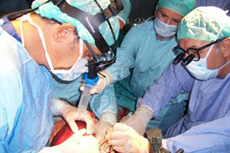
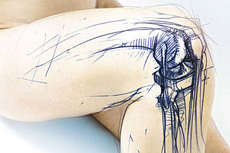
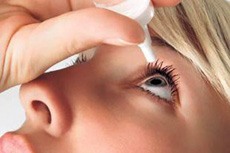

ANASAYFA
KULAK BURUN BOĞAZ
Merkezimizde; kulak, burun, boğaz ve baş boyun hastalıklarının hem tıbbi hem de cerrahi tedavisi gerçekleştirilmektedir. Anatomica ilk olarak Kulak Burun Boğaz dal merkezi olarak hizmetinize sunulmuştur. Spesifik olarak branşlaşmış doktorlarımız 7/24 poliklinik yapmaktadır.
İÇ HASTALIKLARI
İç hastalıkları, tıbbın bir ana bilim dalıdır; Dahiliye olarak da bilinir. İnsanın sindirim sistemi, böbrek, kalp, akciğer, kan hastalıkları, kanserin dahili tanı ve tedavisi, enfeksiyon hastalıkları, romatizmal, hormonal ve allerjik hastalıklar, yaşlı hasta grubunun sağlığı ve hastalıkları ile ilgilenir.
BEYİN CERRAHİSİ
Beyin ve sinir cerrahisi, nörocerrahi ya da nöroşirürji merkezi ve periferik sinir sistemi bozukluklarının mekanik müdahele yoluyla tedavisini yapan bir cerrahi uzmanlık dalıdır. Bu dalda uzmanlık alan tıp doktorlarına nörocerrah ya da nöroşirürjiyen denmektedir. Bu uzmanlık eğitiminin sonrasında daha üst ...
GENEL CERRAHİ
Genel cerrahi, vücutta sistemik ve yerel sorunların cerrahi yöntemlerle tedavisi yanında, genel prensipler (yara iyileşmesi, yaralanmaya metabolik ve endokrin cevap gibi) konuları içeren ve gelişimleri açısından pek çok cerrahi ve temel tıp dalları etkilemiş bir teknik disiplindir.
ORTOPEDİ
Ortopedi orthos ve paedia sözcüklerinin birleşiminden oluşmuş düzgün (orthos) çocuk (paedia) anlamına gelir. Temel olarak kas iskelet sistemini ve onun sorunlarını inceleyen, gövdenin devinim dizgesinin morfolojisini ve işlevini değiştiren doğumsal, sonradan edinilmiş ya da travma sonucu oluşan ...
GÖZ HASTALIKLARI
Oftalmoloji, görme yolları hastalıkları ve cerrahisiyle ilgilenen bir tıp bilim dalıdır. Kelimenin kökeni Yunanca ophthalmos (göz) ve logos (kelime)'den gelmektedir. Ayrıca bir disiplin olarak hayvan gözlerini de içerir çünkü insan gözüyle aralarında son derece az fark vardır.